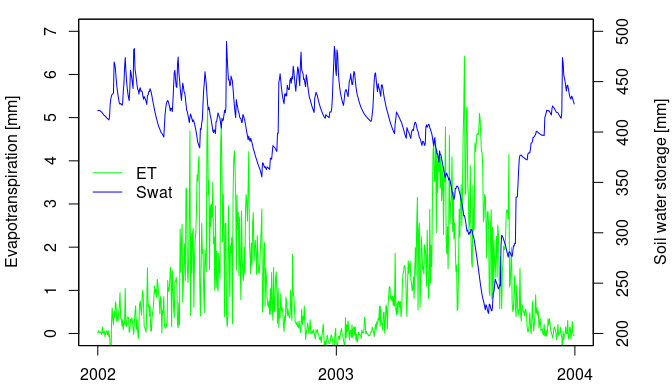

LWFBroo90R provides an implementation of the Soil Vegetation Atmosphere Transport (SVAT) model LWF-BROOK90 (Hammel & Kennel, 2001) written in Fortran. The model simulates daily transpiration, interception, soil and snow evaporation, streamflow and soil water fluxes through a soil profile covered with vegetation. A set of high-level functions for model set up, execution and parallelization provide easy access to plot-level SVAT simulations, as well as multi-run and large-scale applications.
Installation
You can install the released version of LWFBrook90R from CRAN with:
install.packages("LWFBrook90R")and the development version can be installed from Github using the package remotes:
remotes::install_github(repo="pschmidtwalter/LWFBrook90R", build_vignettes = TRUE) Usage
Below is basic example. For more complex examples take a look at the packages vignettes with browseVignettes("LWFBrook90R").
The main function run_LWFB90() creates the model input from model control options, parameters, climate and soil data and returns the simulation results.
# load package and sample data
library(LWFBrook90R)
data(slb1_meteo, slb1_soil)
# set up default model control options and parameters
opts <- set_optionsLWFB90()
parms <- set_paramLWFB90()
# Derive soil hydraulic properties from soil physical properties
# using a pedotransfer function:
soil <- cbind(slb1_soil, hydpar_wessolek_tab(texture = slb1_soil$texture))
# run the model and capture results
lwfb90_res <- run_LWFB90(options_b90 = opts,
param_b90 = parms,
climate = slb1_meteo,
soil = soil)Plot results

Citation
Schmidt-Walter, P., Trotsiuk, V., Meusburger, K., Zacios, M., Meesenburg, H. (2020): Advancing simulations of water fluxes, soil moisture and drought stress by using the LWF-Brook90 hydrological model in R. Agr. For. Met. 291, 108023. https://doi.org/10.1016/j.agrformet.2020.108023
Contributions
Implementations of further methods for creating model input (e.g. leaf area dynamics, root depth density distributions, pedotransfer functions) and other improvements are highly welcome.
Authors
Paul Schmidt-Walter, Volodymyr Trotsiuk, Klaus Hammel, Martin Kennel, Tony Federer.
Tony Federer’s original Brook90 Fortran 77 code (Brook90_v3.1F, License: CC0) was enhanced by Klaus Hammel and Martin Kennel at Bavarian State Institute of Forestry (LWF) around the year 2000. Since then, LWF-BROOK90 is distributed by LWF upon request as a pre-compiled Fortran command line program together with an MS Access User Interface. In 2019, Volodymyr Trotsiuk converted the Fortran 77 code to Fortran 95 and implemented the connection to R. Paul Schmidt-Walter’s brook90r (Schmidt-Walter, 2018) package for LWF-Brook90 input data generation, model execution and result processing was adapted and extended to control this interface function.
License
GPL-3 for all Fortran and R code. brook90r has GPL-3, while LWF-Brook90 was without license until recently. Lothar Zimmermann and Stephan Raspe (LWF), and all previous Fortran contributors agreed to assign GPL-3 to the Fortran code.
References
Federer C.A. (2002): BROOK 90: A simulation model for evaporation, soil water, and streamflow. http://www.ecoshift.net/brook/brook90.htm
Federer C.A., Vörösmarty, C., Fekete, B. (2003): Sensitivity of Annual Evaporation to Soil and Root Properties in Two Models of Contrasting Complexity. J. Hydrometeorol. 4, 1276–1290. https://doi.org/10.1175/1525-7541(2003)004%3C1276:SOAETS%3E2.0.CO;2
Hammel, K., Kennel, M. (2001): Charakterisierung und Analyse der Wasserverfügbarkeit und des Wasserhaushalts von Waldstandorten in Bayern mit dem Simulationsmodell BROOK90. Forstliche Forschungsberichte München 185. ISBN 978-3-933506-16-0
Schmidt-Walter, P. (2018). brook90r: Run the LWF-BROOK90 hydrological model from within R (Version v1.0.1). Zenodo. https://doi.org/10.5281/zenodo.1433677